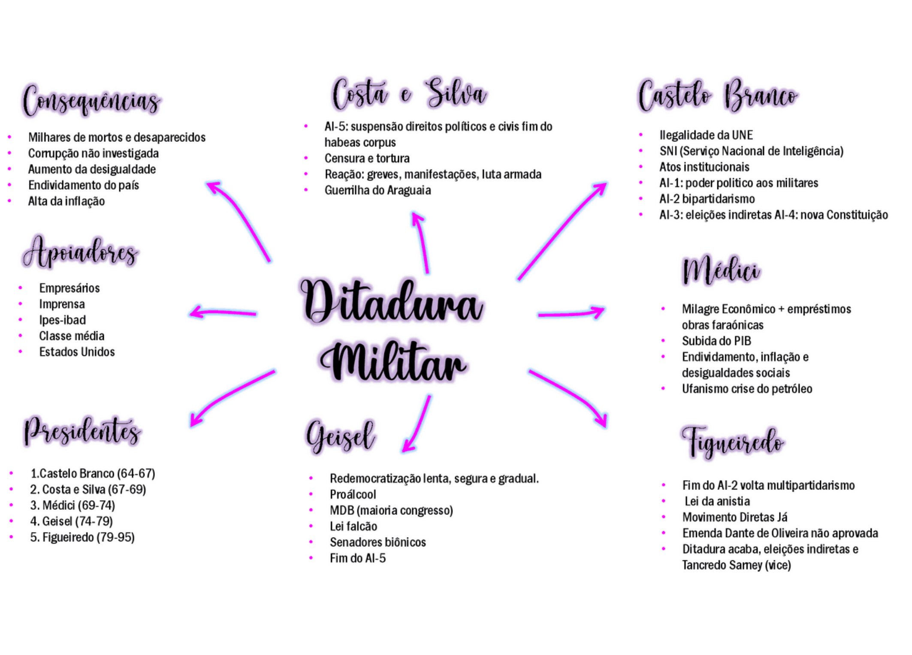
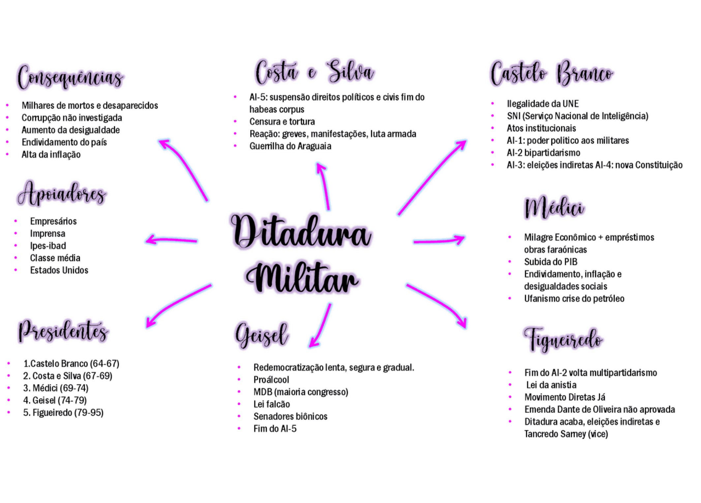

1. História Constitucional do Brasil: O Espelho de uma Nação
A Constituição é a lei fundamental de um Estado, a "Carta Magna" que define sua estrutura, os direitos dos cidadãos e os limites do poder. Sua elaboração pode ser um ato de soberania popular (promulgação) ou de imposição (outorga), refletindo o caráter do regime político vigente.
Importância da Constituição:
- Fundamento Jurídico: É a base de todo o sistema legal, garantindo a hierarquia das leis e a estabilidade institucional.
- Contrato Social: Representa o pacto entre o Estado e a sociedade, estabelecendo direitos e deveres recíprocos.
- Garantia de Direitos: Protege as liberdades individuais, políticas e sociais, essenciais para a cidadania.
- Organização do Estado: Define a forma de governo (república, monarquia), o sistema de governo (presidencialismo, parlamentarismo) e a divisão dos poderes (Executivo, Legislativo, Judiciário).
Formas de Elaboração:
- Promulgação: A Constituição é criada por uma Assembleia Constituinte, cujos membros são eleitos pelo povo. Exemplos: 1891, 1934, 1946, 1988. Reflete um processo democrático e participativo.
- Outorga: A Constituição é imposta por um governante ou grupo no poder, sem consulta popular. Exemplos: 1824, 1937. Caracteriza regimes autoritários.
Panorama das Constituições Brasileiras:
1824 (Outorgada): Pós-Independência, D. Pedro I dissolve a Assembleia Constituinte. Monárquica, centralizadora (Poder Moderador do Imperador), voto censitário, catolicismo oficial. Apesar de algumas garantias civis, era oligárquica e não representativa. Foi a mais longeva (67 anos).
1891 (Promulgada): Contexto da Proclamação da República. Republicana, federalista, laica, introduziu habeas corpus. Voto restrito a homens alfabetizados maiores de 21 anos.
1934 (Promulgada): Avanços sociais e trabalhistas, sufrágio feminino, criação da Justiça Eleitoral. Contexto da Revolução de 1930 e Constitucionalista de 1932.
1937 (Outorgada – "A Polaca"): Golpe de Vargas, inspirada no fascismo. Fortemente autoritária, censura, proibição de greves, concentração de poderes, mas ampliou alguns direitos sociais.
1946 (Promulgada): Fim do Estado Novo, retorno à democracia, garantia de liberdades civis e políticas, eleições regulares, pluripartidarismo.
1967 (Outorgada): Regime militar, autoritária, consolidou o poder dos militares, eleições indiretas, repressão institucionalizada.
1988 (Promulgada – "Constituição Cidadã"): Redemocratização. Garantiu amplos direitos civis, políticos, sociais, econômicos, culturais e ambientais. Universalizou o voto, reconheceu comunidades indígenas e quilombolas, incluiu cláusulas pétreas de direitos fundamentais.
2. Democracia e Ditaduras: Conceitos e Controvérsias
Democracia
Sistema político onde o poder emana do povo, que o exerce diretamente ou por meio de representantes eleitos.
- Soberania Popular
- Voto Universal
- Pluralismo Político
- Liberdades Civis
- Estado de Direito
- Divisão de Poderes
- Participação Social
Desafios: desigualdade social, crise de representação, polarização, desinformação.
Ditaduras
Regimes políticos que concentram o poder, suprimem liberdades e não permitem a participação popular efetiva.
- Autoritária: Concentração de poder no governo, repressão política, censura, controle da informação. Exemplos: ditaduras militares da América Latina.
- Totalitária: Controle absoluto do Estado sobre a vida pública e privada. Partido único, culto ao líder, mobilização forçada. Exemplos: fascismo, nazismo, stalinismo.
3. Políticas Econômicas: Estabilidade, Crescimento e Desafios
Planos Econômicos
Período de hiperinflação (anos 80 e 90). Vários planos até o Plano Real (1994), que trouxe estabilidade monetária, nova moeda (Real) e controle da inflação.
Neoliberalismo no Brasil
Governo FHC: Privatizações, abertura econômica, reforma administrativa. Problemas de crescimento e desemprego.
Governo Lula: Crescimento com boom das commodities, fortalecimento de reservas, programas sociais como Bolsa Família.
Governo Dilma: Crises fiscais, fim do ciclo de commodities, protestos de 2013, queda de crescimento.
4. Direitos Humanos e Sociais: Conquistas e Persistências
Programas Sociais
Bolsa Família: Transferência de renda, redução da pobreza, empoderamento feminino.
Brasil Sem Miséria: Programa para erradicação da pobreza extrema, com resultados reconhecidos pela FAO.
Educação
Expansão da rede federal, Prouni, cotas sociais e raciais. Persistem desigualdades regionais e de qualidade no ensino básico e superior.
Direitos Humanos
Comissão Nacional da Verdade: Investigou crimes da ditadura militar e promoveu reconhecimento histórico.
5. O Brasil Atual: Crises, Reformas e Polarização
Governo Temer (2016-2018)
Implementou a PEC do Teto de Gastos, Reforma Trabalhista, enfrentou denúncias de corrupção e impopularidade.
Eleição de Bolsonaro (2018)
Vitória marcada por polarização, uso das redes sociais, discurso conservador e anti-esquerda. Críticas em relação a direitos humanos e meio ambiente.
Reformas
Previdência: idade mínima e tempo de contribuição ampliados.
Tributária: debate sobre simplificação e justiça tributária, carga regressiva afeta mais os pobres.
Desmatamento e Etnobiopirataria
Amazônia: avanço do agronegócio, mineração e grilagem aumentaram o desmatamento.
Etnobiopirataria: apropriação do conhecimento indígena para exploração comercial sem retorno às comunidades. Impactos ambientais e sociais profundos.
Material complementar
Mapas Mentais


 



Simulados e lista de questões
Responda aos simulados e depois confira sua pontuação:
⚠️ Ao finalizar os simulados, clique em "Ver pontuação". O resultado abrirá em uma nova aba do Google Forms.